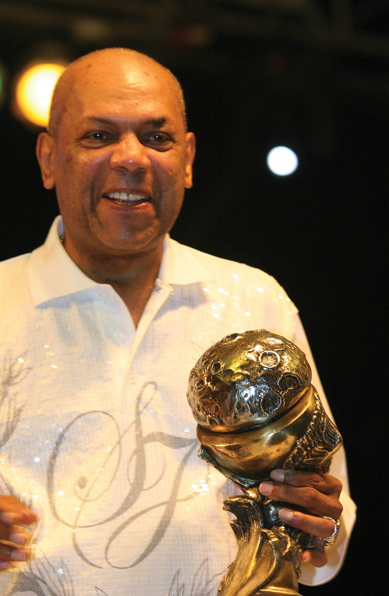

daricaurte
Álvaro José Arroyo González, más conocido como Joe Arroyo,3 fue un cantante y compositor colombiano de música salsa y tropical incluyendo la Cumbia, considerado uno de los más grandes intérpretes de música de su país.
 Supercongo de Oro creado especialmente para él en el Festival de Orquestas.
Desde principios de los años 1980, Joe Arroyo sufrió múltiples quebrantos de salud que le impidieron realizar giras de conciertos y por los cuales varias veces fue dado por muerto. El 7 de septiembre de 1983 fue dado por muerto tras sufrir una tiroides retrospectiva que lo mantuvo alejado de los escenarios. En 2000, estuvo a punto de morir en Barcelona a causa de un coma diabético y una neumonía.
Murió el 26 de julio de 2011, en la clínica La Asunción de Barranquilla a causa de un paro cardiorrespiratorio, producto de una falla multiorgánica (tensión alta, infecciones, problemas renales) que lo había mantenido en cuidados intensivos desde el lunes 27 de junio del mismo año.20 Fue sepultado el 27 de julio de 2011 en el cementerio Jardines de la Eternidad de Puerto Colombia.21 El 19 de octubre de 2011, su cadáver fue trasladado a un área especial para personajes ilustres en el cementerio Jardines de la Eternidad.
Pal´ Bailador